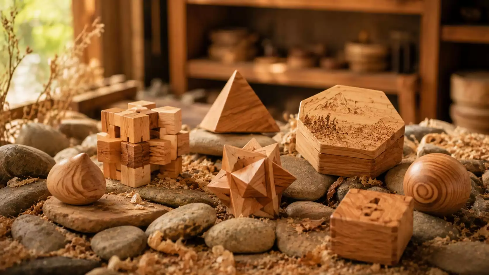
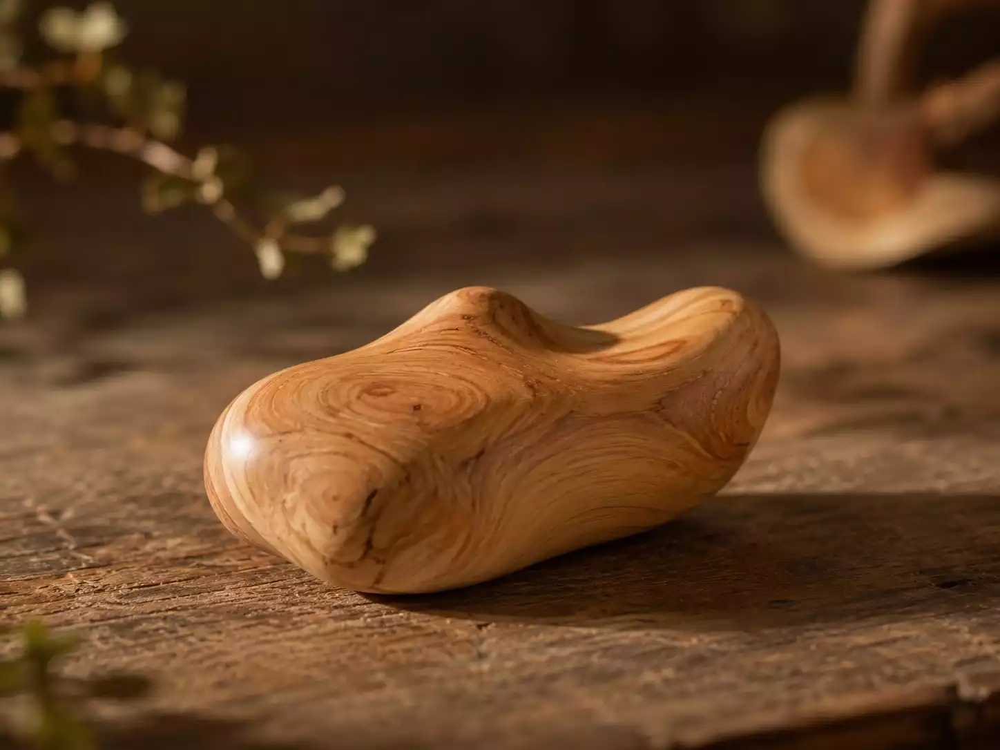
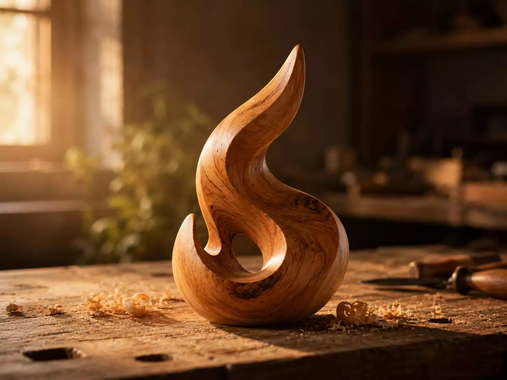
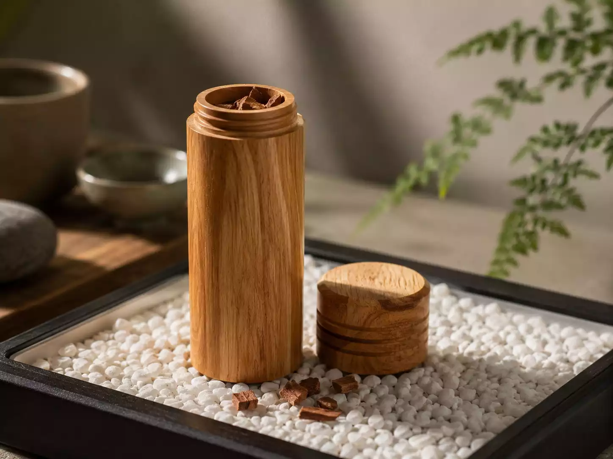

聯和刻記
· 掌心木藝
首頁
關於
作品
木藝講堂

掌心之作
—— 每一件，都是獨一無二的溫度 ——
全部
舒壓
益智
生活
藝術
飾品
療癒

舒壓
肖楠木掌心玩具 · 溫潤手感
益智
檜木x肖楠 魯班鎖 · 幾何美學

生活
香氛護照盒 · 隨身聞香

藝術
肖楠木抽象雕塑 · 簡約線條
舒壓
檜木紓壓方塊 · 單手盲操
飾品
肖楠木幾何吊飾 · 隨身陪伴
療癒
木質刮痧器 · 經絡舒緩
藝術
掌心木鳥 · 手工雕刻
📞 0911938978